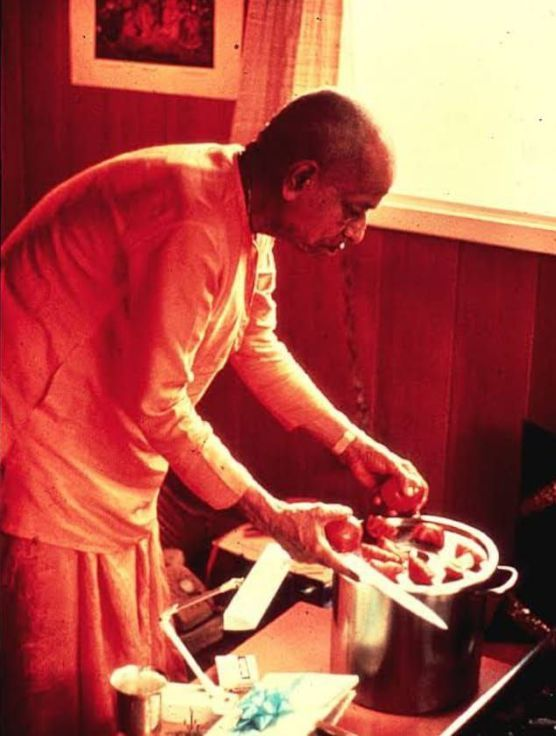

Ekadasi means Feasting not Fasting!

Gargamuni Dasa: In the beginning, in 26th second Avenue, on Ekadasi days, we always thought it was supposed to be a fast day. So practically I think maybe I was the only one who...I did not come for lunch on those days, I would fast. At least until the evening time. I thought I would become spiritually advanced, you know. I invented my own philosophy, I manufactured, you see. We should always discuss between the spiritual master and disciple before we do anything, but not manufacture our own service, so I didn't discuss that with Prabhupada. I just didn't show up.
So on the second or third Ekadasi, Prabhupada asked, "Where is Gargamuni?" So they got me and brought me to Prabhupada, and he said, "Ekadasi means feasting, not fasting, so you come on Ekadasi and you feast." And practically, Ekadasi in those days was a feast because we had preparations that we didn't have during the week, different kinds of chutneys, fruit salads, potatoes with sour cream, so many nice preparations, tomato chutney, Prabhupada made, pineapple chutney and raisin chutney and all these different types of chutneys which were very good with potatoes, so it was a feast, so I stopped fasting on Ekadasi.
(Ref. SPF Interviews)
Dear, srila prabhupada once you very famously said The duty of a Spiritual master is to always Disagree with the desciple. When I heard this I thought it must be for keeping the disciple disciplined and not deviate from the path chalked by you. Ofcourse it is one of the reasons but now here I am understanding that how this disagreement with the disciples is showing your love for them, with your disagreement comes your divine instructions how can we miss it? Every part of your vani is Transcendental even if you use punctuation marks in your writing that too is transcendental and has the power to attract someone into Krsna consciousness and eventually back home back to Godhead. Your disagreement and instructions are only increasing our love towards you. In one example Srutakirti prabhu recalled,
"Srila Prabhupada," I said, "all your disciples have so much love for you. I feel so bad because I lack this intense love. When I'm with you at the airport, I can see everyone dancing, chanting, and crying. I have so much association with you, yet I don't feel this overwhelming love like they do."
I hoped he would say something to relieve my mind. He stayed silent. Tormented, I finished the massage and went back to my room to finish preparing his lunch.
After he'd chanted the Gayatri mantra, he called me into his room. As I entered I offered obeisances and looked up with much concern because he had a serious look on his face.
"So, do you like serving me?" he asked.
"Oh, yes Srila Prabhupada," I replied, "I likes serving you very much."
"Then that is love," he said."Everyone can do so many things singing, dancing, jumping up and down. But you are actually doing something. Isn't that love?"
"I guess so, Srila Prabhupada," I said.
"So you just do your service," he said.
"That is all that is necessary. This is what love means to do service."
You didn't say anything flattering to your disciple you presented the truth, you disagreed with srutakirti prabhu on his "no love statement" But your correction only increased love for you in his heart and eventually in our hearts.
hā hā prabhu koro doyā, deho more pada-chāyā,
ebe jaśa ghuṣuk tribhuvana
O master, Srila Prabhupada! Be merciful unto me. Give me the shade of your lotus feet. Your fame is spread all over the three worlds.
Jay Srila prabhupada!
~Admin